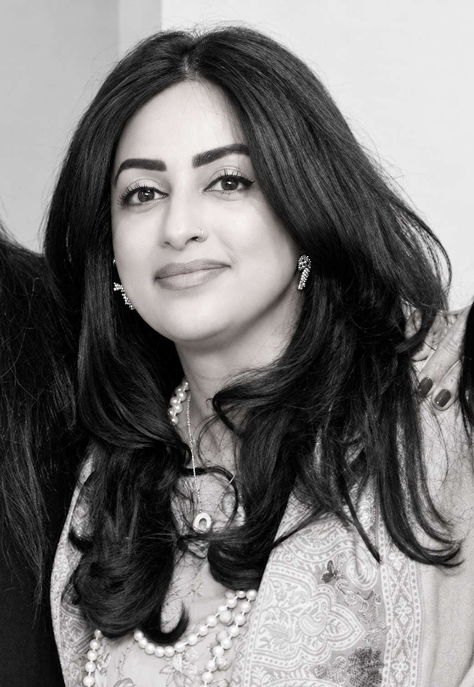

Team
Amal Khan
LMFT #16466
As the Founder of RMH, Amal believes that healing begins when you feel seen and heard. She provides integrative, systemic, and culturally responsive care for individuals, couples, children, and families across California, both in-person and via telehealth.
As a Bay Area native and Pakistani American, Amal brings a deep appreciation for intersectional identities to her clinical practice. She specializes in supporting clients through major life transitions, complex relational dynamics, stress management, burnout, and cultural identity navigation. Her therapeutic approach centers on providing a warm, collaborative, and grounded space where clients can cultivate self-insight and build lasting resilience.
In line with her clinical work, Amal stays actively engaged in community advocacy and mental health discourse. She serves as the Editor-in-Chief for the Santa Clara Valley Chapter of CAMFT and sits on the statewide CAMFT Diversity, Equity, and Inclusion (DEI) Committee, working to advance health equity and culturally attuned care across California.
Outside of the world of therapy, Amal is an avid creative who engages with art, music, writing, and travel. These creative mediums naturally enrich her practice, offering a reflective outlet that deepens her exploration of human connection, generational stories, and collective wellness.
Amal offers therapy in English and Urdu.
